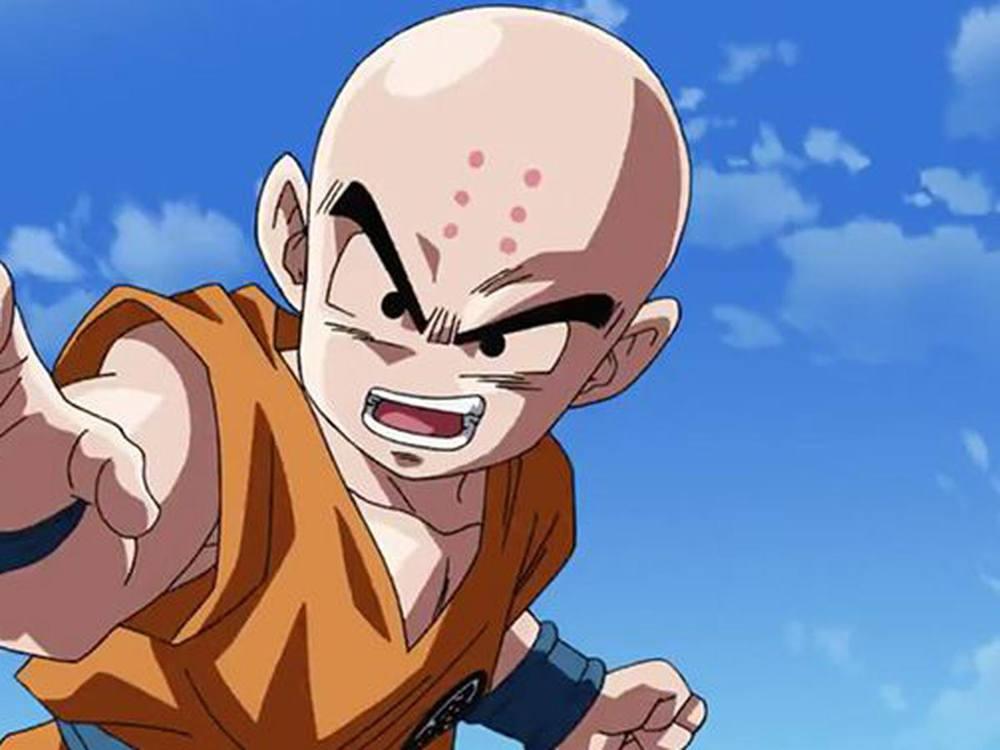

Krillin

Krilin (クリリン, Kuririn), llamado Krilín en España, es un personaje del manga y anime de Dragon Ball. Es uno de los principales discípulos de Kame-Sen'nin, Guerrero Z, y el mejor amigo de Son Goku. Es junto a Bulma uno de los personajes de apoyo principales de Dragon Ball, Dragon Ball Z y Dragon Ball Super. Aparece en Dragon Ball GT como personaje secundario. En el Arco de Majin Boo, se retira de las artes marciales, optando por formar una familia, como el esposo de la Androide Número 18 y el padre de Marron.
Regresar